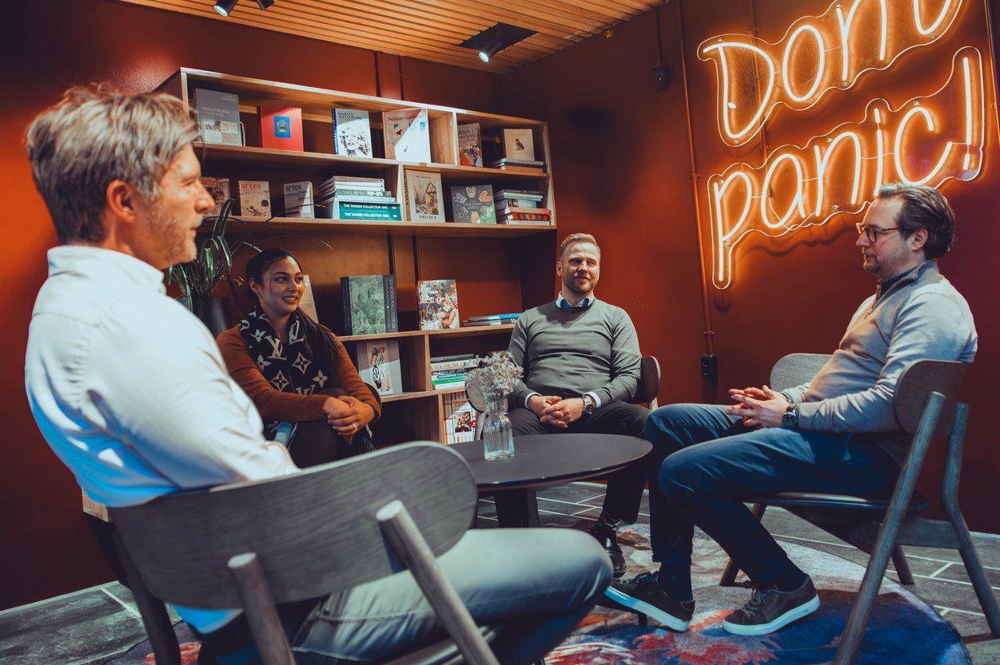
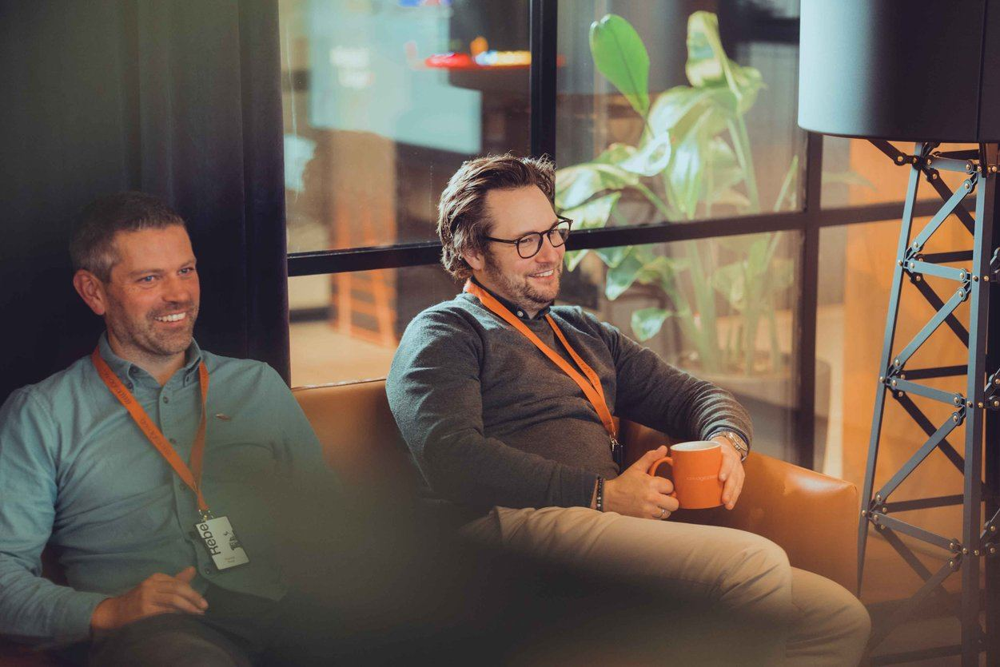

Tjenester 5
Tjenester 5
AI Business Solutions Microsoft Dynamics 365 Business Central AI & Agenter Byx Apps for BC Tjenester Byx Play - Prosjektmetode Byx Care - Forvaltning av Business Central Om oss Om oss Folka våre Jobb & Karriere Utforsk Event & Webinar Aktuelt & Fagartikler Kundehistorier Teknologi & Platform Vår kunnskap hjelper din bedrift med teknologi for fremtiden Ikke la utdatert teknologi hindre din bedrifts vekst. Skift fokus fra å håndtere teknisk gjeld, til kontinuerlig innovasjon og effektiv bruk av dine verdifulle data. Vi hjelper deg med å bygge en fremtidsrettet teknologiplattform, og gir deg gode råd om hvordan du kan utnytte potensialet. Prosjekt Vi vet hvor du skal, men veien dit avgjøres av hvor du kommer fra. Hos Byx Digital spesialiserer vi oss på tre hovedkategorier av prosjekter;
1. Migrering fra on-prem versjoner av Dynamics 2. Standardiserte leveranser av Business Central til mindre virksomheter 3. Tilpassede leveranser av Business Central for større virksomheter med komplekse behov
Felles for alle våre prosjekter er vårt fokus på enkelhet. Første fase nedskaleres så mye som mulig og spesialtilpasninger holdes til et minimum - dette reduserer risiko.
Vårt metodeverk for prosjekter - Byx Play - er tilpasset en slik tilnærming, innenfor alle 3 kategorier


Kort fortalt: hva trenger du?
Beskriv saken, så svarer vi med hva det krever og hva det koster.